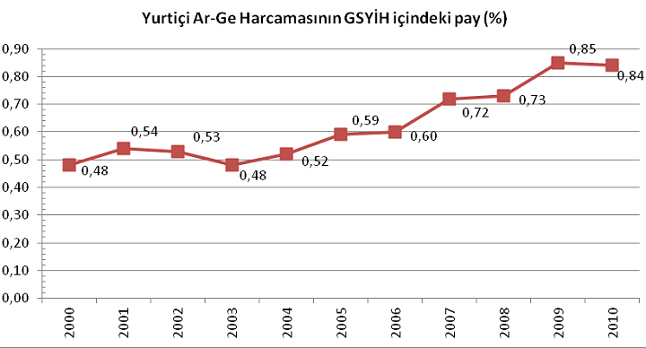
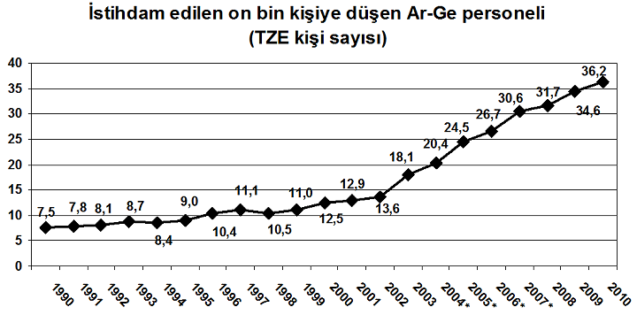
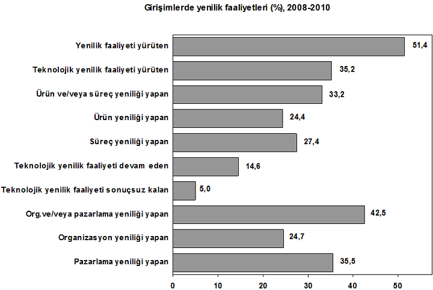
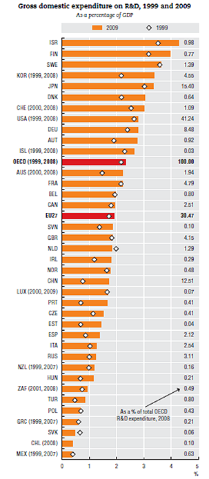
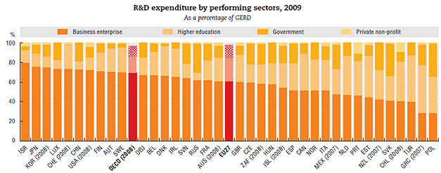
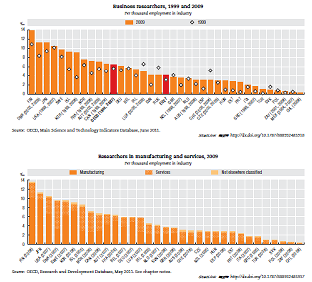

Derleyen: Hasan Acül
Yeni Ürün Geliþtirme Uzmaný (NPDP), PDMA Onaylý Eðitmen (REP)
ROADMAP® Academy Consulting Engineering
4-1-2012, Ýstanbul
Türkiye Ýstatistik Kurumu (TÜÝK), 04 Kasým 2011 tarihinde yayýnladýðý “2010 Yýlý Araþtýrma ve Geliþtirme Faaliyetleri Araþtýrmasý” ve 25 Kasým 2011 tarihinde yayýnladýðý “2008- 2010 Yenilik Araþtýrmasý” çalýþmalarý ile ile ülkemizdeki Ar-Ge ve inovasyon çalýþmalarýnýn son durumunu ortaya koymuþ oldu. TÜÝK’in son verileri, ülkemizde Ar-Ge ve inovasyon çalýþmalarýnýn her yýl artmakta olduðunun olumlu bir göstergesidir. Diðer yandan 20 Eylül 2011 tarihinde yayýnlanan OECD Science, Technology and Industry Scoreboard 2011 çalýþmasý ülkemizin uluslar arasý seviyede yerini ortaya çýkardý. OECD çalýþmasýna göre bu alanda çok daha fazla yol almamýz gerekmektedir.
Yayýnlanan son çalýþmalardan dikkate deðer olduðunu düþündüðüm verileri ve ülkemizin Ar-Ge alanýnda Dünya genelindeki durumunu gösteren bilgileri, sektörümüzde faaliyet gösteren meslektaþlarýmla paylaþmak için, birebir derledim. Orjinalleri kaynaklarýnda rahatlýkla bulunabilir. Derlenen bilgilerin faydalý olmasý dileðimle.
Büyük ölçekte ülkelerin, daha küçük ölçekte iþletmelerin geliþmiþlik seviyesi yürütmekte olduklarý bilimsel ve teknolojik çalýþmalarýn – kýsaca Ar-Ge çalýþmalarýnýn - yoðunluðu ve seviyesi ile doðrudan iliþkilidir. Günümüzde ülkelerin ve iþletmelerin geliþmiþlik seviyelerinin belirlenmesinde Ar-Ge çalýþmalarýna yönelik istatistiklerin fazlaca kullanýlmasý bunun en önemli kanýtýdýr. Ülkelerin araþtýrma, geliþtirme ve yenilikçilik seviyelerinin ölçülmesinde kullanýlan belli baþlý göstergeler – istatistikler þöyle sýralanabilir [1]:
- Ar-Ge harcamalarýnýn miktarý ve gayri safi yurtiçi hasýlaya (GSYÝH) oraný
- Finans kaynaðýna göre ar-ge harcamasý oranlarý
- Sektörler bazýnda Ar-Ge harcamalarý oraný
- Kiþi baþýna Ar-Ge harcamasý
- Ar-Ge faaliyetlerinde çalýþan araþtýrmacý ve bilim insaný sayýlarý ve oranlarý
- 10.000 çalýþan baþýna düþen Tam zamanlý eþdeðer Ar-Ge insan kaynaðý
- Bilimsel yayýn sayýsý
- Patent, faydalý model baþvurularý ve tescil sayýlarý
- …
Ýþletmelerin Ar-Ge seviyelerinin belirlenmesi için de temelde ayný veriler incelenmektedir. Örneðin, ülkeler için Ar-Ge harcamalarýnýn gayri safi yurtiçi hasýlaya (GSYÝH) oraný deðerlendirmeye konu olurken, iþletmeler açýsýndan bu durum Ar-Ge harcamalarýnýn yýllýk cirolarýna oraný olarak yorumlanmaktadýr. Araþtýrma, geliþme ve yenilikçilik faaliyetleri bir çok farklý çalýþma ve kaynaðý içerdiðinden, ölçüm ve deðerlendirme yapýlýrken deðiþik verilerin birlikte yorumlanmasý gereklidir. Ar-Ge harcamalarýnýn miktarý ve oranlarý, finansal kaynak ve sektörel deðerlendirmeler, Ar-Ge faaliyetlerinde çalýþan araþtýrmacý personel sayýsý, patent ve bilimsel yayýn sayýsý vs. deðiþik verilerin güçlü ve zaaflý taraflarý olduðu göz önünden kaçýrýlmamalýdýr.
Türkiye Ýstatistik Kurumu’nun (TÜÝK) 04 Kasým 2011 tarihinde yayýnladýðý “2010 Yýlý Araþtýrma ve Geliþtirme Faaliyetleri Araþtýrmasý” [2] Türkiye’de yürütülen ar-ge faaliyetlerinin son durumu ile ilgili önemli ve güncel sonuçlar vermektedir.
Gayri safi yurtiçi araþtýrma ve geliþtirme (Ar-Ge) harcamasýna göre deðerlendirme
2010 yýlý Ar-Ge Faaliyetleri Araþtýrmasý sonuçlarýna göre kamu kuruluþlarý, vakýf üniversiteleri ve ticari sektördeki anket sonuçlarý ile devlet üniversitelerinin bütçe ve personel dökümlerine dayalý olarak Türkiye’de Gayri Safi Yurtiçi Ar-Ge Harcamasý 2010 yýlýnda bir önceki yýla göre % 14,6 artarak 9 268 Milyon TL olarak hesaplanmýþtýr. Türkiye’de Gayri Safi Yurtiçi Ar-Ge harcamasýnýn Gayri Safi Yurtiçi Hasýla (GSYÝH) içindeki payý ‰8,4’tür [2].

Grafik 1. 2000-2010 Arasý Ar-Ge Harcamalarýnýn Gayri Safi Yurtiçi Hasýla Ýçindeki Paylarý [3] |
Ar-Ge harcamalarýna göre deðerlendirme
2010 yýlýnda Gayri Safi Yurtiçi Ar-Ge harcamalarýnýn %46,0’ý yükseköðretim, %42,5’i ticari kesim ve %11,4’ü kamu kesimi tarafýndan gerçekleþtirilmiþtir.

Grafik 2. Ar-Ge harcamalarýna göre daðýlým [2] |
Ar-Ge finans kaynaklarýna göre deðerlendirme
Ar-Ge harcamalarý, finanse eden kesimler itibarýyla incelendiðinde; 2010 yýlýnda harcamalarýn %45,1’i ticari kesim, %30,8’i kamu kesimi, %19,6’sý yükseköðretim kesimi, %3,7’si yurtiçi diðer kaynaklar ve %0,8’i yurtdýþý kaynaklar tarafýndan karþýlanmýþtýr [2].
Ar-Ge Faaliyetlerinde Çalýþan Araþtýrmacý Sayýlarý ve Oranlarý
2010 yýlýnda Tam Zaman Eþdeðeri (TZE) cinsinden toplam 81 792 kiþi Ar-Ge personeli olarak çalýþmýþtýr. Bir önceki yýla göre TZE cinsinden Ar-Ge personel sayýsýndaki artýþ %11,3’tür. Sektörler itibarý ile daðýlýma bakýldýðýnda, TZE cinsinden toplam Ar-Ge personelinin 2010 yýlýnda %45,9’u ticari kesimde, %40,2’si yükseköðretim kesiminde ve %13,9’u kamu kesiminde bulunmaktadýr. 2010 yýlýnda istihdam edilen 10 000 kiþiye düþen Tam Zaman Eþdeðeri (TZE) Ar-Ge personeli sayýsý 36,2 kiþidir [2].

Grafik 3. Istihdam Edilen 10 000 Kiþiye Düþen Tam Zaman Eþdeðeri (TZE) Ar-Ge Personeli Sayýsý [2] |
Bölgelere Göre Ar-Ge Faaliyetleri
ÝBBS 1.Düzeye göre 2010 yýlýnda Ar-Ge harcamalarýnýn en yüksek olduðu bölge %31,7 ile Batý Anadolu bölgesi (TR5) iken, bunu %20,0 ile Doðu Marmara (TR4) ve %17,9 ile Ýstanbul (TR1) bölgesi takip etmektedir. Ar-Ge personel sayýsýna göre ise %25,8 ile Batý Anadolu bölgesi (TR5) ilk sýrada yer almaktadýr. Bu bölgeyi %21,8 ile Ýstanbul (TR1) ve %14,7 ile Doðu Marmara (TR4) bölgeleri izlemektedir [2].
TÜÝK 2008-2010 yenilikçilik araþtýrmasý:
Türkiye Ýstatistik Kurumu’nun (TÜÝK) 25 Kasým 2011 tarihinde yayýnladýðý “2008 - 2010 Yenilikçilik Araþtýrmasý” [4] Türkiye’de yürütülen inovasyon faaliyetlerinin son durumu ile ilgili önemli bilgiler vermektedir. 2008-2010 yýllarýný kapsayan üç yýllýk dönemde 10 ve daha fazla çalýþaný olan giriþimlerin %51,4’ü yenilik faaliyetinde bulunmuþtur [4].
Yenilik faaliyetleri giriþimlerin büyüklük grubu ile orantýlý olarak artmaktadýr. 10–49 çalýþaný olan giriþimlerin %49,4’ü, 50–249 çalýþaný olan giriþimlerin %58,9’u ve 250 ve daha fazla çalýþaný olan giriþimlerin %69,7’si yenilik faaliyetinde bulunmuþtur [4].

Grafik 4. Giriþimlerde Yenilik Faaliyetleri (%), (2008-2010) [4] |
Teknolojik yenilik faaliyeti yürüten giriþimler en önemli bilgi kaynaklarý arasýnda %35,5 ile kurum içi kaynaklarý, %34,9 ile müþterileri, %28,0 ile makine, teçhizat ve yazýlým saðlayýcýlarý gösterirken, bunu %19,9 ile rakip giriþimler ve ayný sektördeki diðer giriþimler izlemektedir [4].
2008-2010 yýllarýný kapsayan üç yýllýk dönemde giriþimlerin %28,2’si teknolojik yenilik faaliyetleri için finansal destek aldý. Giriþimlerin %26,3’üne merkezi kamu kurum/kuruluþlarý tarafýndan finansal destek verilirken, Avrupa Birliði Kurumlarý da %0,9’unu destekledi [4].
Teknolojik yenilik faaliyetinin etkilerini giriþimlerin %74,0’ý mal ve hizmet kalitesini arttýrmasýný, %64,2’si yeni pazar yaratmasý veya pazar payýný arttýrmasýný, %62,7’si ise ürün veya hizmet çeþidini arttýrmasý olarak belirtmiþlerdir. Bunlarý %59,4 ile mal veya hizmet üretim kapasitesini arttýrýcý etkisi olduðunu ifade edenler takip etmektedir [4].
Organizasyon yeniliði yapan giriþimlerin %51,3’ü organizasyon yeniliðini yapmada en önemli amacýn ürünlerin ve/veya hizmetlerin kalitesini geliþtirmek olduðunu belirtmiþ olup, bunu %42,5 ile müþteri ve tedarikçi ihtiyaçlarýný cevaplama süresinin azaltýlmasý takip etmektedir [4].
Ulusalarasý Alanda Türkiye’deki Ar-Ge Faaliyetlerinin Seviyesi
20 Eylül 2011 tarihinde yayýnlanan OECD Science, Technology and Industry Scoreboard 2011 çalýþmasý ülkemizin uluslar arasý seviyede yerini ortaya çýkarmýþtýr [5]. Ülkemiz Ar-Ge harcamalarýnda OECD ortalamasý olan % 2,3’ün çok altýndadýr. Ar-Ge harcamasýnýn Gayri Safi Yurtiçi Hasýla (GSYÝH) içindeki payý üzerinden yapýlan deðerlendirmede Ýsrail, %4’ü aþan bir oran ile Ar-Ge yoðunluðu en fazla olan ülkedir [5].

Grafik 5. Ülkelere Göre Ar-Ge Harcamalarýnýn Gayri Safi Yurtiçi Hasýla Ýçindeki Paylarý [5]

Grafik 6. Ülkelerdeki Ar-Ge Harcama Kaynaðýna Göre Paylar [5]

Grafik 7 & 8: Araþtýrmacý Sayýlarý [5] |
Kaynaklar:
[1] Türkiye Ýstatistik Kurumu, Eurostat, TÜBÝTAK vb. saygýn kurumlarýn ülke ve iþletmelerin ar-ge seviyelerini belirlemek için temel aldýðý deðerlendirme kriterleridir. (www.tuik.gov.tr, www.tubitak.gov.tr, ec.europa.eu/eurostat)
[2] Türkiye Ýstatistik Kurumu (TÜÝK) “2010 Yýlý Araþtýrma ve Geliþtirme Faaliyetleri Araþtýrmasý” ,TÜÝK Haber Bülteni, Sayý : 224, 04.11.2011 (www.tuik.gov.tr)
[3] Tübitak Web Sayfasý (www.tubitak.gov.tr), Ýstatistikler Sayfasý, Eriþim 04.01.2012
[4] Türkiye Ýstatistik Kurumu (TÜÝK) “2008 - 2010 Yenilikçilik Araþtýrmasý”, TÜÝK Haber Bülteni, Sayý : 238, 25.11.2011 (www.tuik.gov.tr)
[5] OECD Science, Technology and Industry Scoreboard 2011 (www.oecd.org)
|